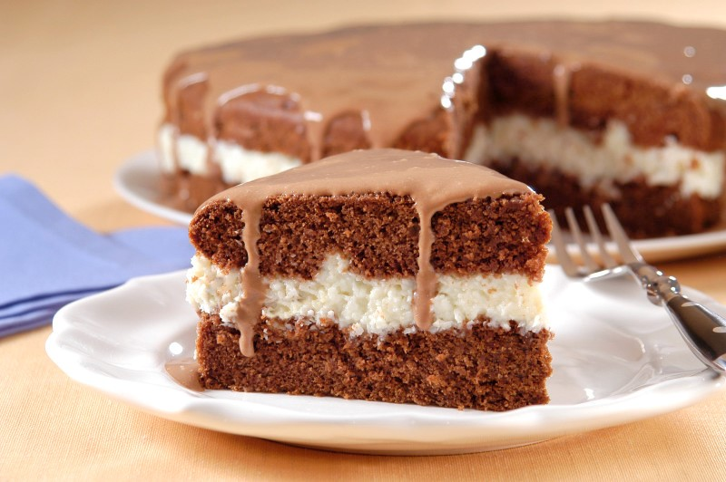

Bolo de Maria João
da cozinha da mãe do Sandro

Descrição
Uma receita de bolo de chocolate bastante fofo com recheio de côco e leite consensado e cobertura de chocolate.
Bastante calorico, mas ideal para aquecer a alma.
Ingrdientes
Para o bolo
- 4 ovos
- 2dl de óleo
- 2 chávenas de açúcar
- 1 chávena de leite
- 6 colheres de sopa de chocolate em pó
- 1 colher de chá de fermento
Para a cobertura
- Meia lata de leite condensado
- 50gr de manteiga
- 4 colheres de sopa de chocolate
Para o recheio
- Meia lata de leite condensado
- 1 chávena mal cheia de leite
- 100gr de côco
Preparação
Para o bolo
- Pré-aquecer o forno a 180º.
- Untar uma forma com manteia e polvilhar com farinha.
- Separar as claras das gemas e bater as claras em castelo.
- Adicionar às gemas os restantes ingredientes e bater a mistura com o auxílio de uma batedeira.
- Envolver as claras em castelo suavemente, para o ar não desaparecer.
- Colocar a massa na forma e levar ao forno.
- Esperar cerca de 40 minutos, verificando com uma masse de espargute, se o bolo já estará cozido.
Para a cobertura
Enquato o bolo coze, prepara-se a cobertura primeiro, uma vez que terá de arrefecer no frigorifico, e em seguida o recheio.
- Derreter a manteiga no micro-ondas.
- Misturar a meia lata de leite condensado com a manteiga derretida.
- Acrescentar o chocolate em pó lentamente e misturar até obter uma mistura heterogénia.
- No fim, conservar no frigorífico.
Para o recheio
- Levar ao lume o restante da lata de leite condensado.
- Adicionar o leite e o côco.
- Mexer, levando à eboluição, até engrossar.
Empratamento
- O ideal nesta fase seria deixar o bolo arrefecer, antes de cortar e montar, contudo, se se estiver com muita fome ou simplesmente pressa, ignorar este passo.
- Cortar o bolo horizontalmente, a meio, com o auxílio de duas grandes facas.
- Rechear o interior com o recheio.
- Volar a colocar a parte de cima.
- Verter a cobertura.
- Reservar o bolo no frio até à hora de servir.
Bom proveito!
Voltar à página principal